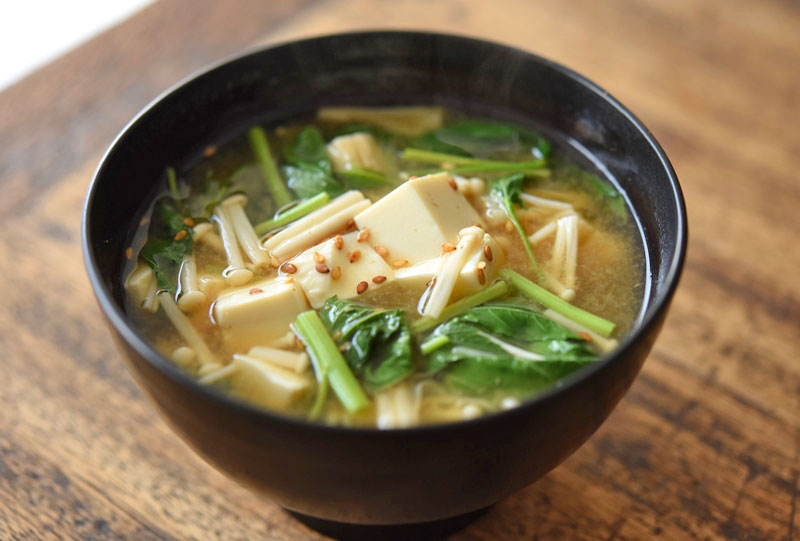

Miso Soup 味噌汁

Quick and simple miso soup.
Ingredients
- Dashi
- Miso Paste
- Tofu
- Veggies
Recipe Instructions
- Simmer dashi over medium heat
- Add 4-5 Tbsp of miso paste to the dashi and stir to dissolve
- Chop tofu/veggies and add to miso once completely dissolved
- Never boil miou soup as it will lose nutrients, flavor, and aroma.
Return to main page